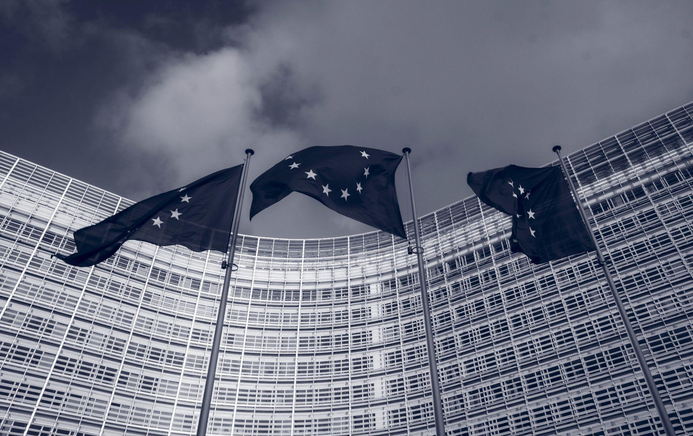
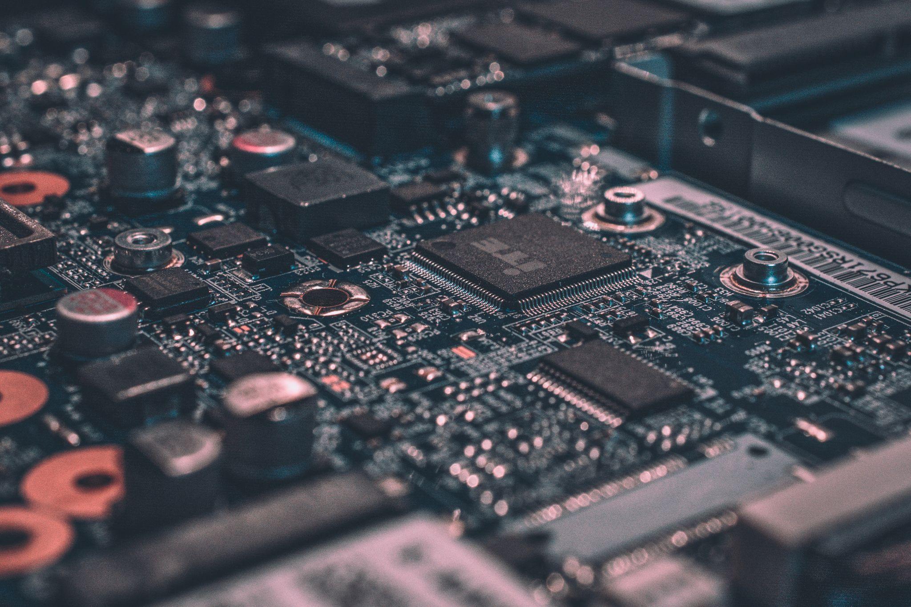

En premier lieu, nous avons besoin de savoir pour quelle raison nous faisons cette analyse. Mais avant ça, nous rappellerons ce qu’est une analyse PESTEL pour saurais qui n’en aurait pas la moindre idée. Une analyse PESTEL est une façon de rendre compte de l’environnement d’une entreprise ou d’un secteur ; pour nous, ce sera le secteur de la Tech. Cette méthode d’analyse permet notamment de comprendre l’environnement dans lequel évolue et évoluera notre sujet. Les lettres PESTEL désignent en fait les secteurs d’analyse, à savoir : Politique, Économique, Socioculturel, Technologique, Écologique et Légal. Pour résumer, l'analyse va nous permettre d'avoir un tour d'horizon du secteur de la Tech et de comprendre les limites entre Green IT et Greenwashing. Le PESTEL permet par ailleurs de mesurer l'impact environnemental du secteur du numérique et ce que cela implique dans les environnements dudit PESTEL.
Passons, en second lieu, à l’analyse à proprement parler.
 Concernant la politique, de nombreuses institutions, gouvernements et alliances (l’UE par exemple) mettent en place des restrictions et des normes concernant la conception, la vente et le recyclage des produits électroniques. Le secteur évolue de plus en plus, il faut être vigilant aux dernières normes. A l'international, certains pays font barrage au concept du Green IT
L'économie, quant à elle, est un point clé dans le secteur du Green IT, bien qu'au premier abord, il ne semble pas que les entreprises aient un intérêt à respecter l'environnement. Il s'avère en réalité, que le Green IT pourrait bien faire augmenter les profits des entreprises. L'économie mondiale est relativement stable et permet aux entreprises d'investir dans les nouvelles technologies.
Socialement parlant, on observe aussi des comportements intéressants : le prix psychologique des produits de Green IT semble plus élevé que la moyenne. On remarque une demande importante de produits respectueux de l'environnement. Le marketing à une grande influence sur les consommateurs, le côté "Green" d'un produit est aujourd'hui un argument de vente prioritaire.
 Viens ensuite, la technologie un point clé dans la Green IT. Pour faire des produits plus respectueux de l'environnement, on utilise des nouvelles méthodes de conception dites d'éco-conception. On réfléchit à la production du produit, à son utilisation, et à sa fin de vie ; l'objectif étant d'augmenter le plus possible la durée de vie des produits et de créer une vie cyclique du produit dans laquelle on pourra le recycler quasiment entièrement et le réutiliser.
L'écologie aussi se place au centre du Green IT. L'idée est d'abord de réduire l'impact environnemental des entreprises de la Tech. En e�et, le secteur du numérique est un des plus polluants et un des plus gros consommateurs de ressources naturelles et rare. Il est nécessaire pour le bien de tous que cela change.
Enfin, les lois concernant les entreprises de la Tech semblent favorables à un développement du Green IT. De nombreuses lois récentes proposent des solutions face à l'impact environnemental des appareils électroniques. Les lois jouent aussi un rôle de garde-fou à propos du Greenwashing.
En troisième lieu, nous allons essayer de tirer des leçons de cette analyse. Pour commencer, nous pouvons observer quels sont les domaines les plus importants et expliquer pourquoi. La technologie et l’écologie semblent être les deux points clé à la compréhension de cette analyse. En e�et, l’analyse porte sur le monde de la Tech, il est donc assez évident que la technologie à une importance capitale dans cette analyse. L’écologie, elle, prend aussi tout son sens lorsque l’on parle de Green IT : l’objectif de ce mouvement étant de rendre la technologie plus écologique et plus respectueuse de l'environnement. Grâce à cette rapide observation, nous pouvons dire que pour comprendre le Green IT, il faut absolument pratiquer une veille technologique et une veille écologique. On voit aussi que ce mouvement ne peut pas exister sans les usagers, et leurs positionnements en relation avec ce dernier. Il est donc important de prendre connaissance de l’opinion publique et de faire attention au retour des clients et des utilisateurs. Enfin on voit aussi que l’aspect économique n’est pas à négliger. Par ailleurs, il semble même que ce domaine soit celui qui fasse le plus défaut actuellement et qui pose le plus de problème au sein du mouvement Green IT. Il est di�cile pour les entreprises de changer de politique financière. L’écoconception coûte très cher pour les entreprises et peut donc être un frein majeur, mais il ne faut pas oublier que les produits durables peuvent être vendus plus cher et sont susceptibles de créer une économie secondaire de réparation.
En dernier lieu, il ne faut pas oublier que le monde évolue et les consommateurs aussi. Il est possible que dans un futur proche, les consommateurs s'intéressent encore plus à leur impact environnemental individuel et à l'impact du numérique. On pourrait aussi espérer que les pays dont la production d'électricité dépend des énergies fossiles fasse un virage à 90 degrés, ce qui réduirait considérablement l'impact du numérique. D'autres pays ou unions pourraient réadapter leurs accords en prenant en compte l'aspect écologique de ces derniers, pour réduire une fois de plus l'impact du secteur. Les entreprises de la Tech devraient investir massivement dans la conception de produits plus durable, réparable et recyclable à 100% qui nécessite le moins de ressource rare possible. Il est du devoir des institutions de pousser les entreprises du secteur à aller vers le Green IT avec des réglementations, des lois et des normes.